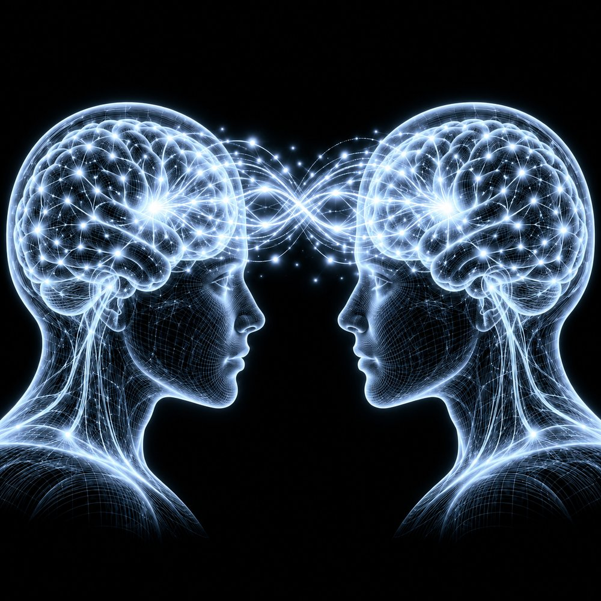

Medicine and Therapeutics
Brain-to-text communication allows individuals with locked-in syndrome, ALS or severe stroke to communicate at typing speed. Neural signals can be applied to prosthetics, exoskeletons or robotic limbs, restoring independent mobility. Brain painting allows a user to draw lines on a virtual canvas using brain signals, which gives an alternative communication channel for people with paretic motor functions (Botrel et al., 2015). In other cases, BCIs can be used to target neural circuits to relieve symptoms of treatment-resistant depression, PTSD, OCD or chronic pain.
Gaming and Immersive VR
BCIs allow direct neural control in virtual reality (VR) and video games, enabling faster reaction times and deeper immersion. They can be used in co-op games where the team must make co-operative decisions (Sekhavat, 2020). BCIs offer more immersive experiences in arts, music and neurofeedback using virtual reality techniques. VR-BCI can help with neuroeconomics by measuring cognitive workload, and with motor rehabilitation. BCI-based wheelchair and mobile robot control will vastly help those who have lost their mobility. Studies show that VR offers a better neurofeedback option than computer screens (Juliano et al., 2020).
Brain-to-Brain Interface (BBI)
A brain-to-brain interface is another branch of BCI development, involving two human brains. The transmitter's cognitive objectives are decoded and converted into commands or instructions for the receiver's brain. This technology could also be used to control humanoid robots in hazardous environments, such as sending a robot into a coal mine or into space to perform tasks that are dangerous for humans. In 2013, researchers implemented a direct BBI system in which one rat was able to share sensorimotor information with another rat (Pais-Vieira et al., 2013).
